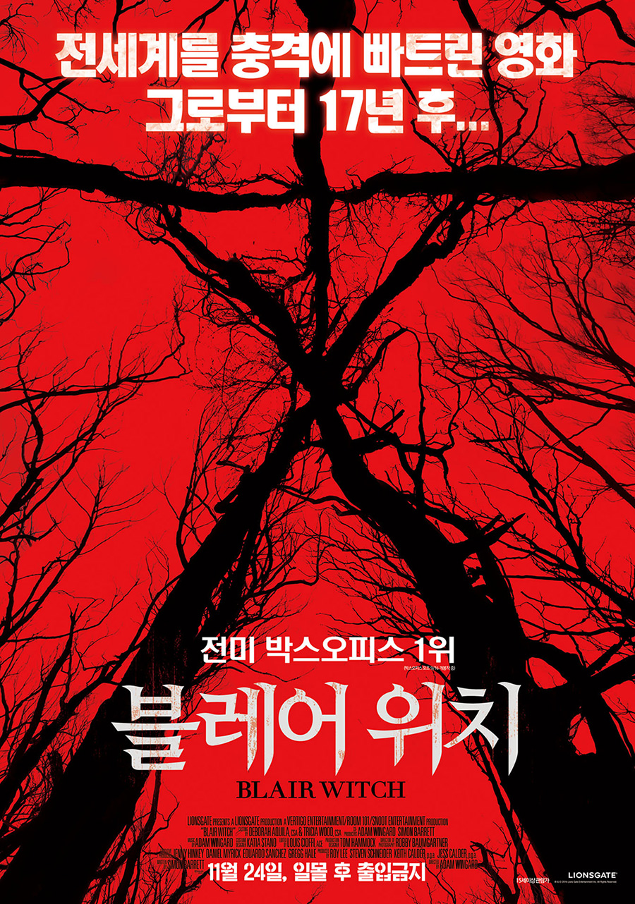
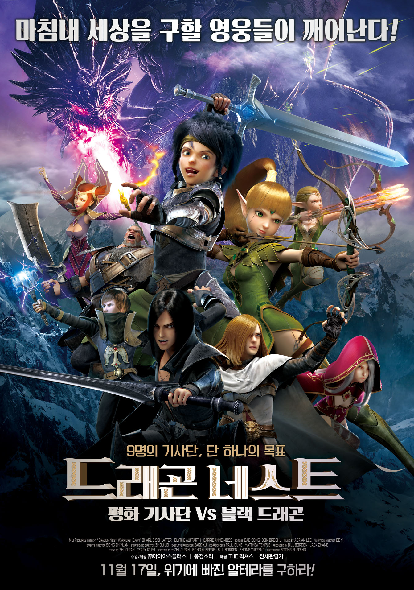
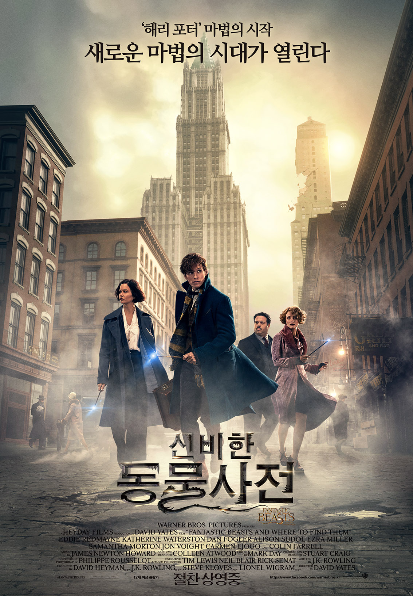
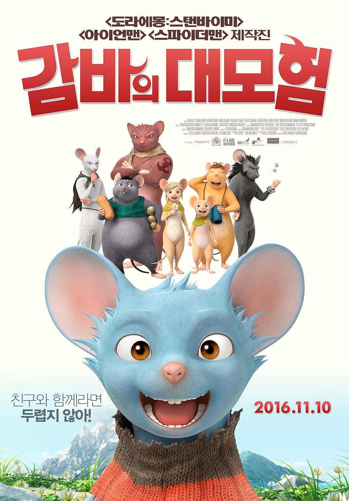
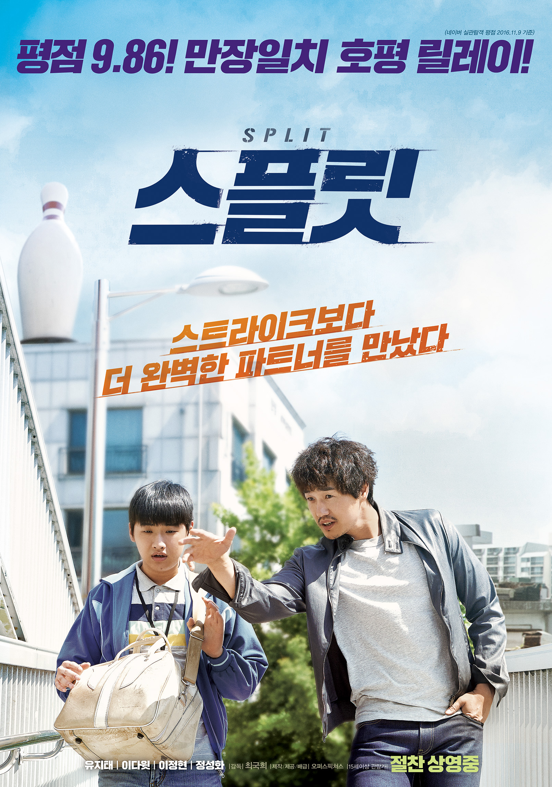
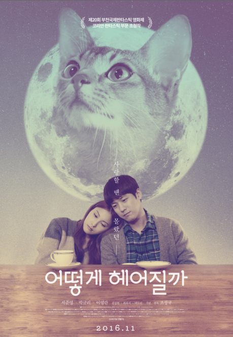
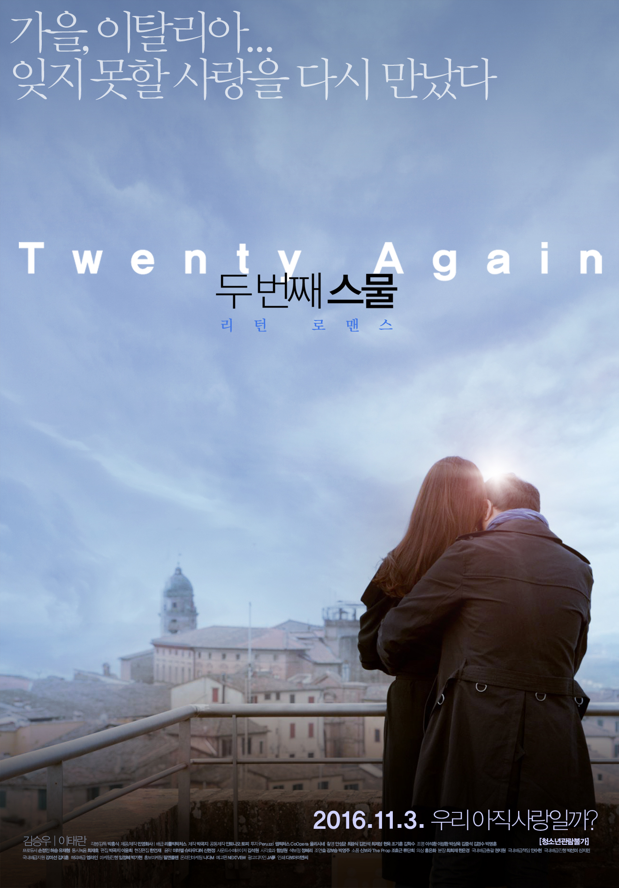
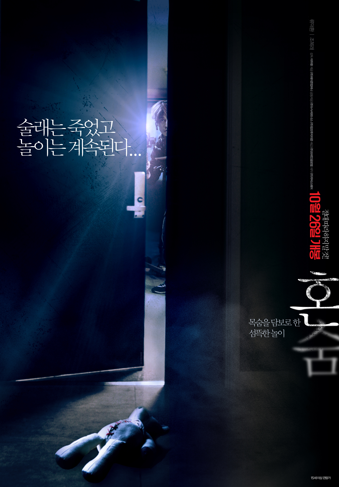

CULTURE
상영작·예정작 영화랭킹 매거진 시사회·이벤트 평점·리뷰
현재 상영영화(2016.11.23 기준)

- 형
네티즌 ★★★★☆ 8.25 | 기자·평론가 ★★☆☆☆ 4.00
개요 코미디, 드라마 | 110분 | 2016.11.23 개봉
- 미스 사이공: 25주년 특별 공연
네티즌 ☆☆☆☆☆ 0.00 | 기자·평론가 ☆☆☆☆☆ 0.00
개요 공연실황 | 175분 | 2016.11.23 개봉
출연 알리스태어 브래머, 에바 노블자다, 홍광호, 존 존 브라이언스

- 블레어 위치
네티즌 ★★★★☆ 8.50 | 기자·평론가 ★★★☆☆ 6.00
개요 공포, 스릴러 | 89분 | 2016.11.23 개봉
출연 칼리 헤르난데스, 제임스 앨런 맥퀸, 코빈 리드, 발로리 커리, 웨스 로빈슨, 브랜던 스콧
- 드래곤 포스 극장판
네티즌 ★★★☆☆ 6.17 | 기자·평론가 ★☆☆☆☆ 3.00
개요 애니메이션 | 89분 | 2016.11.17 개봉

- 드래곤 네스트: 평화 기사단 VS 블랙 드래곤
네티즌 ★★★★☆ 8.37 | 기자·평론가 ★★★☆☆ 6.00
개요 모험, 가족, 판타지 | 87분 | 2016.11.17 개봉
출연 이현, 김연우, 홍진욱, 장병관, 박상훈, 사문영, 김소희
- 겁쟁이 페달: 스페어바이크
네티즌 ★★★★☆ 8.88 | 기자·평론가 -
개요 애니메이션 | 60분 | 2016.11.17 개봉
출연 모리쿠보 쇼타로, 카키하라 테츠야, 스와베 쥰이치, 야스모토 히로키, 이토 켄타로, 사카구치 다이스케, 이세 마리야
- 연애담
네티즌 ★★★★☆ 8.90 | 기자·평론가 ★★★★☆ 7.17
개요 드라마, 멜로/로맨스 | 99분 | 2016.11.17 개봉
- 순종
네티즌 ★★★★★ 9.58 | 기자·평론가 ★★★☆☆ 5.00
개요 드라마, 다큐멘터리 | 88분 | 2016.11.17 개봉
출연 김영화, 김은혜, 한성국, 최강희, 최수종

- 줄리에타
네티즌 ★★★★☆ 8.59 | 기자·평론가 ★★★☆☆ 6.67
개요 드라마 | 99분 | 2016.11.17 개봉
- 야근 대신 뜨개질
네티즌 ★★★★★ 9.23 | 기자·평론가 ★★★☆☆ 6.33
개요 다큐멘터리 | 98분 | 2016.11.17 개봉

- 신비한 동물사전
네티즌 ★★★★☆ 8.43 | 기자·평론가 ★★★★☆ 7.13
개요 판타지, 모험 | 132분 | 2016.11.16 개봉
출연 에디 레드메인, 콜린 파렐, 캐서린 워터스턴, 앨리슨 수돌

- 가려진 시간
네티즌 ★★★★☆ 8.45 | 기자·평론가 ★★★☆☆ 6.68
개요 드라마, 판타지 | 129분 | 2016.11.16 개봉
- 카페 6
네티즌 ★★★★☆ 7.81 | 기자·평론가 ★★★☆☆ 5.50
개요 멜로/로맨스, 코미디 | 103분 | 2016.11.16 개봉

- 감바의 대모험
네티즌 ★★★★☆ 8.56 | 기자·평론가 ★★★☆☆ 5.00
개요 애니메이션 | 90분 | 2016.11.10 개봉
출연 카지 유우키, 칸다 사야카, 타카기 와타루, 오오츠카 아키오, 이케다 슈이치, 타카토 야스히로, 후지와라 케이지, 야지마 아키코

- 스플릿
네티즌 ★★★★☆ 9.12 | 기자·평론가 ★★★☆☆ 6.38
개요 드라마 | 121분 | 2016.11.09 개봉
- 위자 : 저주의 시작
네티즌 ★★★★☆ 7.52 | 기자·평론가 ★★☆☆☆ 4.50
개요 공포 | 99분 | 2016.11.09 개봉
출연 엘리자베스 리저, 애너리즈 바쏘, 룰루 윌슨, 더그 존스, 헨리 토마스, 케이트 시겔, 린 샤예

- 세상에서 고양이가 사라진다면
네티즌 ★★★★☆ 8.66 | 기자·평론가 ★★★☆☆ 5.90
개요 드라마 | 103분 | 2016.11.09 개봉
- 글루미 선데이
네티즌 ★★★★☆ 9.06 | 기자·평론가 ★★★★☆ 7.25
개요 드라마, 멜로/로맨스 | 114분 | 2016.11.03 개봉
출연 조아킴 크롤, 스테파노 디오니시, 벤 벡커, 에리카 마로잔
- 인어공주:새로운 모험의 시작
네티즌 ★★★☆☆ 5.49 | 기자·평론가 --
개요 애니메이션 | 77분 | 2016.11.03 개봉

- 아프리칸 닥터
네티즌 ★★★★★ 9.32 | 기자·평론가 ★★★☆☆ 6.00
개요 코미디, 드라마 | 93분 | 2016.11.03 개봉

- 어떻게 헤어질까
네티즌 ★★★★★ 9.00 | 기자·평론가 --
개요 드라마 | 103분 | 2016.11.03 개봉

- 두 번째 스물
네티즌 ★★★★☆ 7.67 | 기자·평론가 ★★★☆☆ 5.00
개요 멜로/로맨스, 드라마 | 116분 | 2016.11.03 개봉
- 무한대를 본 남자
네티즌 ★★★★☆ 8.53 | 기자·평론가 ★★★☆☆ 6.45
개요 드라마 | 108분 | 2016.11.03 개봉

- 닥터 스트레인지
네티즌 ★★★★☆ 8.77 | 기자·평론가 ★★★☆☆ 7.03
개요 액션, 모험, 판타지 | 115분 | 2016.10.26 개봉
출연 베네딕트 컴버배치, 레이펠 맥아담스, 틸다 스윈튼, 매즈 미켈슨, 치웨텔 에지오포

- 혼숨
네티즌 ★★★★☆ 7.62 | 기자·평론가 ★★☆☆☆ 4.33
개요 공포 | 90분 | 2016.10.26 개봉
- 위풍당당 질리 홉킨스
네티즌 ★★★★☆ 8.56 | 기자·평론가 ★★★☆☆ 6.00
개요 코미디, 드라마, 가족 | 97분 | 2016.10.26 개봉
출연 소피 넬리스, 캐시 베이츠, 글렌 클로즈, 옥타비아 스펜서, 줄리아 스타일스

- 노트북
네티즌 ★★★★★ 9.07 | 기자·평론가 ★★★★☆ 7.00
개요 멜로/로맨스, 드라마 | 123분 | 2016.10.19 개봉

- 럭키
네티즌 ★★★★☆ 8.54 | 기자·평론가 ★★★☆☆ 5.68
개요 코미디 | 112분 | 2016.10.13 개봉